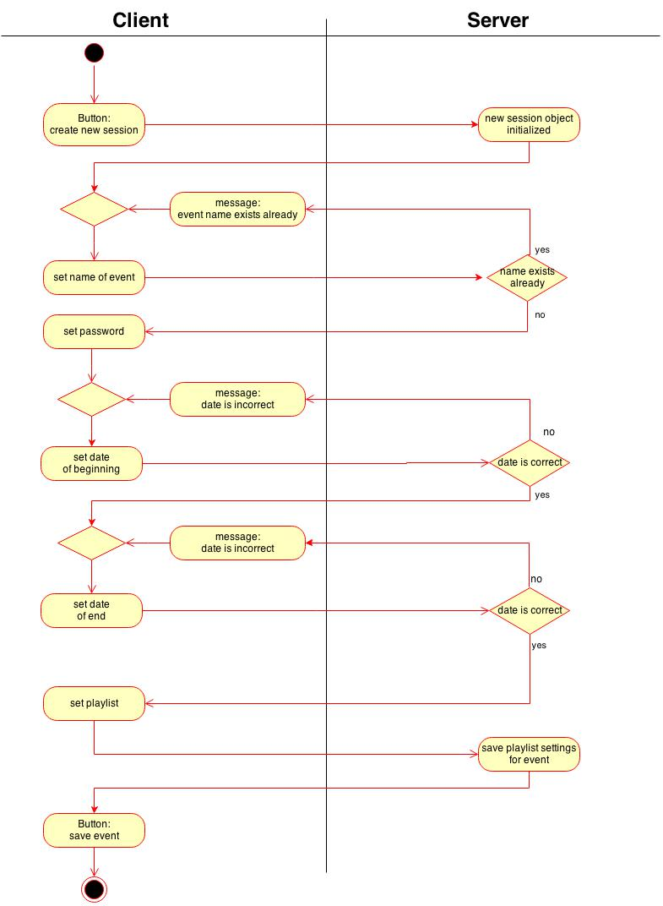

Phillipp Perez Heil, Leo Reschetko, Tobias Schwarz.
We are students at the DHBW Kalrsruhe and work on a project for the course "Software Engineering".
| Date | Version | Description | Author |
|---|---|---|---|
| 28.10.2014 | Version 0.1 | Created Use Case and filled out | Phillipp Perez Heil |
| 30.10.2014 | Version 0.2 | Added link to .feature | Phillipp Perez Heil |
Create Event
The admin can create a new event. Each event has a name, a password, a begin and an end date and an according playlist of music.
The admin clicks on "New Event" and enters following information:
Finally, he hits the "on" button to create the event.
Link to according .feature file
If the admin forgets to fill out
then he gets a message that the information filled out was incorrect or incomplete.
If the admin selects
he gets a message that the date is incorrect.
not applicable
You need to be logged in as admin in order to create an event.
After the admin hit the "on"-button the event is created and saved in the database. Furthermore the event is displayed on the bottom of the main page, so that casual user can see the next events.
not applicable